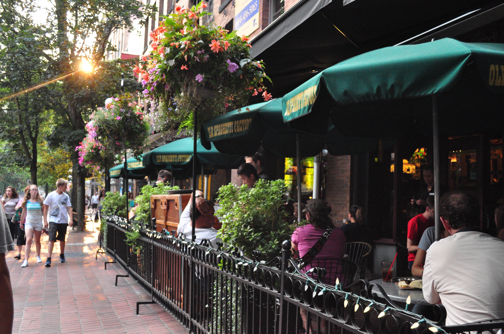

224 Burgers & More


Welcome to 224 Burgers & More, where we meet your burger needs! We are a local burger joint (hence the name) whom opened in early 2002. We've won almost every award imaginable for our amazing allstar burgers! Come and enjoy our smokey smokehouse bbq burger and fries if you're feeling saucey, or try our all american quarter pound burger if you're feeling patriotic. At our location you will find outside seating to enjoy some beautiful weather while dining, as well as planty of TV's to catch today's latest game. 224 Burgers & More caters to all needs with our lunch specials, kids menu, and senioor/veterans discount, so come see us downtown Crystal Lake!